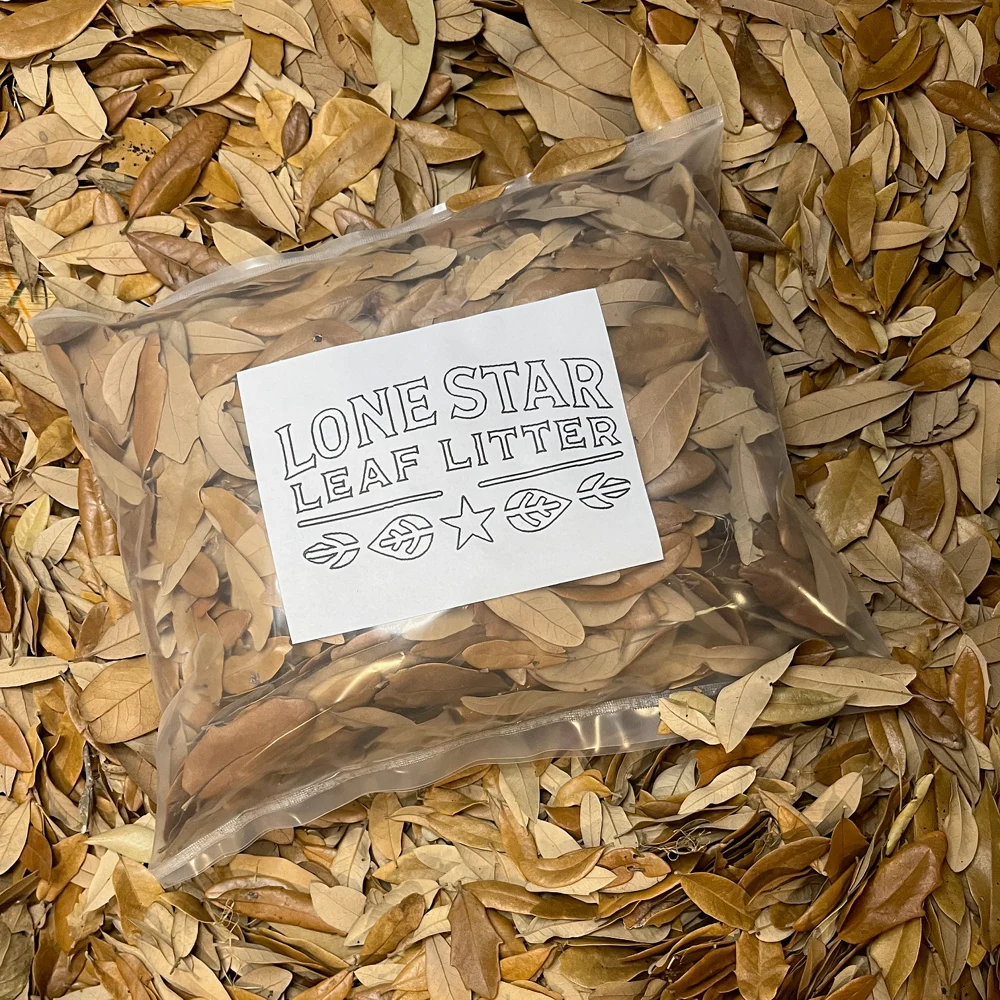

Good leaf litter for isopods starts with correctly identified leaves from a known source. In a culture, loose leaves give isopods cover and decaying plant material to forage through. Texas live oak is one option when it suits the species and conditions you keep.

Why consider Texas live oak?
Live oak leaves have a firm structure and a small size that can fit into cultures and create loose cover. As they break down, they add decaying plant material for decomposers. Breakdown and consumption vary with moisture, temperature, and the animals present.
Choose known, suitable material
Use correctly identified leaves from an appropriate source and consider possible contamination. Do not assume an unknown leaf is suitable because another species tolerates it. Ask a reliable species-specific husbandry source if you are unsure.
A complete culture needs more than leaves
Keep the appropriate substrate, ventilation, moisture gradient, food, and mineral sources for your isopods. Leaf litter does not replace those requirements. Observe the colony and adjust care to the species.
Where should I put the leaves?
Set loose leaves on top of the substrate where your colony needs cover. Leave feeding and water areas accessible, and preserve the moisture gradient your species needs. Start with the terrarium leaf litter setup guide if you’re working out how much floor area to cover.
How much should I buy?
Use your culture's floor area and the amount of cover needed, rather than tank gallon capacity alone. Start with an appropriate loose layer. Replenish when cover thins or leaves are consumed; there is no guaranteed bag lifespan.
Inspect and prepare
Our leaves are hand-collected and screened. That does not mean sterile. Inspect before use, store unused material dry, and consult species-specific guidance about preparation. Home treatment is not a guarantee that all organisms or eggs are eliminated.
Watch moisture and fungal growth
Live oak is not mold-proof. Monitor the culture's ventilation, moisture, and uneaten food. Assess excessive growth and follow appropriate care guidance rather than relying on a claim of mold resistance.
Put the tiny dirt cattle to work
Use leaves as part of a thoughtfully maintained culture. We supply dry Texas live oak leaf litter in 1-, 2-, 3-, and 4-gallon quantities. You supply the keeper's judgment.